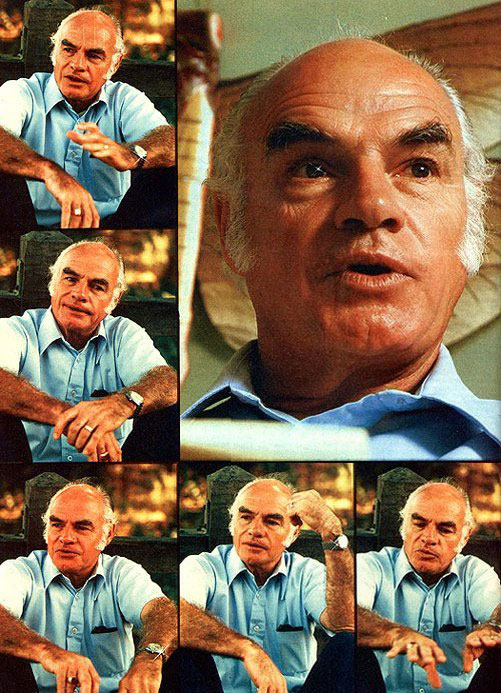

The following conversation-which was edited from a discussion between Dr. van den Bosch and Robert Wuliger-is the result of the last interview granted by the controversial entomologist before his death. MOTHER is proud to publish it and proud, also, to turn the remainder of this introduction over to Robert van den Bosch's friend and compatriot in the struggle to protect our environment, Paul Ehrlich.
Members of the incredibly lucrative pesticide industry, their cronies in the United States Department of Agriculture, their bought-and-paid-for entomologists and toxicologists, and the men and women-at the bottom of the insecticide pyramid-who make their living promoting the broadcast use of pesticides . . . none of these people liked Dr. Rachel Carson's book, Silent Spring, one bit. It is likely that they will be even more disturbed by what Robert van den Bosch has to say here and in his book, The Pesticide Conspiracy . . . because Van exposes the fact-long known to insiders in the pest control business-that the indiscriminate use of such chemical insecticides is a disaster for all but those who sell and promote them.
Today's pesticide methods will not control insects in the long run, and often do not in the short run. Instead, such a system puts a heavy health burden upon farmworkers and others, and assaults the ecosystems of our planet which supply indispensable free benefits to all human beings.
Professor van den Bosch was able to lay out the story of the stupidity, venality, and corruption of the pest control industry as only an insider could. His loss will not only be felt deeply by his friends and fellow eco-activists, but by the public that he worked to protect, as well.-Paul Ehrlich.
Who do you suppose this reprehensible individual might be?
VAN DEN BOSCH: Well, I know that the quotes all refer to me. They are merely a few of the many "endearments" that have been directed my way-as a result of my environmental activism-by agribusiness trade magazine editors, other scientists in my field, and even some of my University of California associates.
PLOWBOY: Tell me a bit about the background of the man who inspired such vicious attacks.
VAN DEN BOSCH: My mother was a Swiss farm girl who married a Dutch floriculturist. My parents operated flower shops-growing their own "merchandise"-in both Holland and England . . . before eventually settling in California. I was born and raised in the small San Francisco Bay area town of Martinez, and received my Ph.D. in entomology from the University of California at Berkeley in 1950.
PLOWBOY: Would it be fair to assume that your small-town upbringing and your parents' work with plants had something to do with the fact that you eventually settled upon a career in insect pest management?
VAN DEN BOSCH: Yes, I think that would be an accurate statement. I've been interested in biology-especially as that science pertains to insects-since my early childhood bug-collecting days.
In fact, I've pursued the study of entomology for the greater part of my life. Until about a decade ago, my work was conducted on a strictly scientific level. Since that "turning point" in my career, however, my activities have become more and more political.
PLOWBOY: What was it that triggered your move from scholarly work to eco-activism?
VAN DEN BOSCH: It simply became clear to me that our current ideas about insect control were heading the world toward both ecological and economic disaster ... and that political action was the only way we were ever going to get off our global pesticide treadmill.
PLOWBOY: What do you mean by "pesticide treadmill"?
VAN DEN BOSCH: I'm referring to the situation that develops when farmers are forced to use more and more insecticides every year-end pay higher and higher prices for those substances-while the natural processes of species resurgence and immunity backlash actually build up insect populations rather than destroy them. This sort of "unwinnable war" is a result of our rather silly attempts to control the more than sextillion reproductively prolific creatures-among the world's million and a half insect species-with single-minded Buck Rogers methods. The pesticide treadmill is a long, expensive walk . . . which can never make any real progress.
PLOWBOY: And your studies led you to believe that there was a workable alternative to the commonly used technique of regular pesticide bombardment?
VAN DEN BOSCH: Yes, but that answer wasn't discovered overnight. You see, my specialty is biological regulation ... which is essentially the control of plant or animal populations through the use of natural predators. My colleagues and I knew, however, that it would be absolute insanity to try to make effective use of the beneficial predatory and parasitic insects in the face of a nationwide blizzard of pesticides. So those of us in Berkeley's Division of Biological Control began working toward an integrated, multifaceted insect management system ... simply because we felt that such a technique would be the only method that would allow us to show any significant progress with natural mortality agents.
PLOWBOY: What various factors make up an integrated control technique?
VAN DEN BOSCH: In the first place, you have to remember that most species will not-if left to themselves-breed into infinite abundance. Neither will any animal or plant type typically crash suddenly into extinction. There is some "force" at work to keep all living populations with the possible exception of our own regulated ... and that natural control is what is commonly referred to as "the balance of nature".
. . . when we brought our killer chemicals into the act . . . we not only harmed many higher animals, but also destroyed great numbers of the beneficial insects that prey on other bugs!
Now it so happens that the components of the overall natural controlling forces are both biotic and physical. In other words, lions eat antelopes, puma eat deer, big fish eat little fish, mantises eat grasshoppers, and so on. Those are all examples of physical predation. And then, of course, there are the diseases and parasites that also play a biotic role in regulating populations.
In my work-which is mostly concerned with bugs, snails, and creatures of that sort-the use of predacious and parasitic insects is probably the main thrust. But integrated control is simply rational pest control . . . a combination of information, decision-making criteria, a variety of methods and materials, and naturally occurring pest mortality . . . which results in an effective and redeeming pest management system.
PLOWBOY: Where, if anywhere, do pesticides fit into this picture?
VAN DEN BOSCH: We occasionally use chemical insecticides ... but only to augment natural controls. Therefore, we've gotten ourselves deeply involved in the politics of chemical pest control . . . since pesticides-which really have the upper hand in today's insect-control scene-often interfere with the natural enemies that can prey upon an unwanted species. This interference has been both the product and the cause of a disruptive pattern of pest outbreaks all over the world ... which have followed, for the most part, the introduction of DDT.
The human race simply didn't realize-prior to the development of our arsenal of modern biocides-that there was a tremendous amount of natural biological regulation going on all around us. Therefore, when we brought our killer chemicals into the act-beginning, of course, with DDT-we not only harmed many higher animals, but also destroyed great numbers of the beneficial insects that prey on other bugs!
PLOWBOY: Most pesticides, after all, aren't particular about what-or whom-they kill. . . .
VAN DEN BOSCH: Exactly. And now the world is seeing a pattern of pest resurgence following chemical insecticide treatments. Such problems are termed "secondary pest outbreaks" . . . that is, infestations which involve the emergence of species lurking in the environment that were not numerous enough to be pestiferous . . . until all of the natural controls over them had been destroyed or disrupted by our poisons. This pattern has led to the global pesticide treadmill I mentioned before . . . a problem that's taking on the proportions of a disaster in some areas of the world.
PLOWBOY: But the concept of a balance of nature is certainly much older than DDT . . . why didn't more people see the danger coming?
VAN DEN BOSCH: The only way I can answer that question is by speculating that we had become so technologically cocky we figured we could defy nature and ignore the laws of ecological balance. Therefore, we tried to impose ourselves upon the earth-tried to dominate it-and, of course, the environment found its own ways of striking back.
It should have been obvious all along that no species can really overpower nature without disrupting the entire planet's ecosystems and food chains. Yet that kind of domination is exactly what we humans are still trying to achieve . . . and is responsible for the many, many ecological problems that are beginning to manifest themselves.
PLOWBOY: Would you say, then, that the balance of nature is probably the most effective population management tool at our disposal?
VAN DEN BOSCH: Definitely, and most especially when the control efforts are directed at insects. Bugs are our competitors for a number of resources . . . and they're the most successful antagonists that the human race has yet encountered! The bears are almost gone, and the great cats are pretty much relegated to zoos . . . we've chopped down whole forests and dug up prairies . . . but the earth's insects are holding their own. In fact, because of our mistakes, they're doing better than ever!
Insects are, you see, too varied, too genetically plastic, too adaptable to adversity or opportunity, and too incredibly prolific in their reproductive capabilities to be managed with a unilateral chemical control technique. In effect, these creatures simply thumb their antennae at us when we try to defeat them with such simple tactics.
PLOWBOY: But don't most biologists understand that a purely chemical control system cannot work?
VAN DEN BOSCH: I would assume that most intelligent biologists recognize this fact. However, I sometimes wonder if entomologists are-as a group-quite as bright as are members of the other biolgical disciplines. I have a former student who refers to us bug specialists as "dumb biologists" . . . and I'm afraid-considering the way some members of my profession have gone about pest control-that he's on the right track.
PLOWBOY: Is there much disagreement among entomologists as to which forms of insect regulation are most effective? For instance, do some of your compatriots favor regular pesticide use?
VAN DEN BOSCH: Certainly, and that's been the basis for a lot of the problems that have impeded our attempts to institute integrated control techniques. Some of my fellow entomologists are completely dominated and orchestrated by the chemical industry and by the proponents of chemical control tactics.
In fact, the central problem with current insect management programs is, stated simply, this: The chemical industry has taken over our pest control efforts, and as a result we are locked into the unilateral approach that I mentioned previously. Unfortunately, the impetus for this trend has more of a merchandising than a scientific imperative . . . the huge pesticide firms are trying to maintain and expand their markets. And the profit motive has become more important to them than killing insects . . . or maintaining environmental quality.
PLOWBOY: If it is true that a number of your colleagues, some of them entomologists who enjoy great prestige, are "dominated and orchestrated" by-or are, in effect, stooges of the chemical pesticide industry . . . then the road to rational insect control will surely be a rough one. Why, however, would such respected scientists allow themselves to be manipulated?
VAN DEN BOSCH: Although I would say that some of these men are stooges, while some are dupes and others are merely unaware of what they're doing . . . my point is that entomologists have played a subservient role in insect control for the last quarter century. In other words, my profession has been dazzled by the toxicologists and physiologists and chemists . . . and, of course, many entomologists were susceptible to the temptation that the chemical firms offered. Those industries lured these scientists-with grants and such-in specific research directions which have all led to an insect killing-rather than insect management-approach . My profession sometimes seems to have abandoned all its other possibilities in the quest for better bug killers.
PLOWBOY: In your book, The Pesticide Conspiracy, you refer to the various proponents of chemical control as the "pesticide mafia". That's a strong term, of course, but certainly no more defamatory than the accusations that the propesticide forces have leveled against you. Do you feel that the "mafia's" verbal attacks-some of which were quoted at the beginning of this interview-were brought about merely because you challenged their entrenched ideas?
I am challenging the system that supports the pesticide mafia . . . thus its members . . . resort to attacks upon my personality, integrity, intentions, and motivations . . . to silence me.
VAN DEN BOSCH: I've done more than just challenge those ideas ... I've been doing my best to turn the whole insect control field around. Naturally, any time someone goes against a powerful consortium-especially one that has control of an extremely lucrative situation-there is going to be retribution of one sort or another.
PLOWBOY: Well, just how much money is involved in today's chemical pest control business?
VAN DEN BOSCH: The overall pesticide and pest control costs to the United States alone probably run to between two and four billion dollars a year, and these figures are steadily growing. Of course, that money represents quite a" take" for the various vested interests that I group under the term "mafia". Included in this hodgepodge are not only the chemical industry itself, but also federal and state pest control regulators, many bureaucrats, food processors, a number of farm groups, commodity organizations, the trade magazine people who make their living off the industry, agricultural commissioners, and so forth. All of these people are more or less committed to the same course of action . . . that is, defending the pesticide status quo.
And this disparate group prefers to attack its enemies by name-calling . . . using such loaded terms as "eco-freaks", "bird and bunny lovers", "radicals", and even" hippies". I am challenging the system that supports the pesticide mafia . . . thus its members consider me a radical and resort to attacks upon my personality, integrity, intentions, and motivations in their attempts to silence me.
Most of these people are equivocators . . . men and women who prefer not to take a hard look at the issues. So when I or any other ecologically concerned individual comes on strong about the hazards of unnecessary spraying-how it kills off our honeybees and pollinators, for instance, or impedes economical crop production in general-they react to my positive statements. I tend to speak in terms of black and white on such issues, while my opponents think in terms of white and gray.
PLOWBOY: Can you prove your anti-pesticide statements scientifically?
VAN DEN BOSCH: Of course, and I do so in The Pesticide Conspiracy. All of the points that are made in my volume have either stood the test of independent scientific examination or are based upon my own experimentation and research.
Furthermore, I've tried-in that publication-to restrict my "radicalism" to those areas in which I have firsthand experience. I don't, for instance, attempt to deal with the very real problems of carcinogenesis. I've limited my treatment to the pest control question . . . an area I feel very confident in because of my own research, the published literature on the subject, contact with my colleagues, etc.
PLOWBOY: Do your pro-pesticide opponents offer any scientific evidence to support their points of view?
VAN DEN BOSCH: Well, it must be taken into consideration that most of the people who've attacked me are either nonscientists or men and women who are only superficially involved in some area of scientific study. More often than not, my detractors are spokespersons for one vested interest or another.
I do get some heat from my peers . . . but this is mainly due to the fact that I've deviated from the accepted notions of "Proper" academic behavior. That is, I've gotten involved in the public imbroglio over the pesticide issue, an action that many scientists feel represents undignified and unscholarly conduct. On the other hand, though, I feel it is my responsibility to be heard when I see aberrant and unsavory courses of action going on in my own area of expertise. I think that I must, as a public servant, speak out on such issues.
PLOWBOY: Does the fact that your aggressive stance might limit the agribusiness grants available to universities and research labs have anything to do with the peer pressure you've received?
VAN DEN BOSCH: I'm sure that enters into the problem. I can remember, for instance, a case when the Environmental Defense Fund asked me to round up a group of entomologists who would be willing to discuss the dangers of DDT . . . on behalf of the EDF and the Environmental Protection Agency.
When I was asked to do this, I immediately contacted about half a dozen of my "bug scientist" compatriots . . . and they all agreed that DDT was extremely dangerous and that its use should be curtailed. So I said, "Will you talk to Charles Wurster"-the Stony Brook University entomologist who was organizing the attack-"about testifying at the hearings in Washington?" Every one of the entomologists whom I spoke with agreed to do so. Yet when it came right down to the nitty-gritty, they all backed off because they were afraid of retribution ... in the form of punitive action from their administrators or the loss of further grant opportunities. So such "practical" factors do, in fact, influence the stands that people will take.
PLOWBOY: How would a college's administrators go about punishing one of its staff scientists? They obviously can't fire a tenured professor . . . or can they?
VAN DEN BOSCH: An actual dismissal wouldn't be too likely . . . but a university's decision makers can pass up a troublesome individual when promotion time comes around. For example . . . Robert Rudd-an entomologist at the University of California at Davis-wrote the book Pesticides and the Living Landscape. As a result of that publication, Rudd not only was passed over for promotion, but had his experiment station title taken away from him, too!
PLOWBOY: Have you suffered that sort of harassment from the administration at Berkeley?
VAN DEN BOSCH: No, I haven't-up to this point-been exposed to any such attacks at all. However . . . I'm perfectly aware that there has been effort on the part of a number of chemical-control-oriented groups to have my university's administration put a stop to my integrated pest management efforts. But Jim Kendrick-who is Berkeley's Vice President for Agricultural Sciences-has always put such people off . . . and I respect Jim very much for doing so. Of course. I don't know whether he merely considers me the "house radical"-and, as such, an asset to the University of California's liberal image or whether he believes, as I do, that a university should be a forum where men and women of honor can take their stands. Nevertheless, in this and in other institutions, there have been cases of harassment aimed at people who've taken strong positions on the chemical pest control issue.
PLOWBOY: While it's clear that a college professor can be vulnerable to the malicious efforts of the pesticide mafia, such men and women are-in part-protected by their positions. But what sort of damage could be done to the career of a just-graduated student who's been through the training that your department provides? If that young person goes out into the world to fight for integrated pest control, will he or she be in for a lot of trouble?
VAN DEN BOSCH: There have been some isolated instances in which that's been the case. By and large, however, our students usually manage to find suitable positions . . . although many of the available jobs-in agricultural experiment stations or with the USDA-fall far short of the ideal for folks who want to push integrated control ideas. But, despite some drawbacks, getting our students placed does help spread ecological pest management ideas around.
PLOWBOY: Of course, the successes of the few integrated control programs that are already in existence help to get the word out, too.
VAN DEN BOSCH: Definitely. And we've had some pretty spectacular "winners".
" The signs of breakdown and backlash are becoming very apparent . . . and some of us who have been screaming warnings for a long time are beginning to see our predictions come true. "
For instance, the cotton growers of the San Joaquin valley were, not long ago, involved in about the nastiest pesticide treadmill imaginable. Some farmers were actually bankrupted as a result of it! The problem was caused by indiscriminate crop spraying . . . which was supposed to control the population of lygus bugs. However, the excessive use of pesticides brought about a secondary outbreak of the cotton bollworm. And, not only were these infestations devastating, but little could be done to contain the bollworms, because they had developed resistance to many poisons . . . and since the worms bore into cotton plants, they are thus protected from sprays.
After some extensive research on the subject, my colleague Louis Falcon and I-with the help of other entomologists were able to come up with an integrated solution. Basically, we adjusted the lygus-bug spraying so it would only be done at those times and places that such action was really necessary. This allowed the bollworm's natural enemies to stage a comeback. The solution was so effective that I recently had to send one of my graduate students to Mexico to finish his thesis on the bollworm.
PLOWBOY: Because there weren't sufficient numbers of the insects left in the San Joaquin valley?
VAN DEN BOSCH: That's right. And as an added bonus, the per-acre insecticide costs for that region dropped from $11.97 to $4.94, while crop yields actually went up from $247 per acre to over $270!
There are other examples, too. Integrated control has been quite effective in solving what was once a severe insect problem in northern California's Marin and Sonoma counties.
You see, during World War II, fliers from Hamilton Field often dropped their dummy bombs in the 2,000-acre Petaluma Marsh area. This created a number of potholes which were filled with water during flood tides but weren't subject to regular tidal "flushing". Eventually, the little ponds reached just the right stagnancy level for breeding mosquitoes, and the infestation was on!
Fortunately, Dr. Alan Telford-manager of the Marin County Mosquito Abatement District-had a firm understanding of the ecology of the pests and opted for an integrated control program. Telford devised a pothole drainage system that wiped out the bugs' "nurseries" . . . and put an end to the use of expensive aerial spraying. Best of all, though, Alan stopped the use of parathion . . . a dangerous nerve-gas derivative which the chemical people had been selling as the answer to the mosquito problem.
PLOWBOY: Hasn't integrated control made a few breakthroughs in urban areas, too?
VAN DEN BOSCH: Yes. For instance, the Berkeley City Parks and Recreation Department spent years spraying streetside trees with chemical insecticides ... it was a regular routine for them.
However, the city's populace didn't like the idea of all those chemical molecules floating around in their environment. The public complained about the spraying, and one day I found an irate housewife-complete with babe in arms-in my office. That woman was accompanied by a couple of Parks and Recreation people, and she was taking them to task for spraying the trees near her house and letting the pesticide drip onto her organic garden. She wanted my Division of Biological Control to do something about the problem.
Well, as it happened, the aphids that were being sprayed were old ''friends" of mine . . . and I knew they'd been controlled in Europe by natural parasites. So a group representing the Northern California Committee for Environmental Information, the University, the city of Berkeley, and the USDA got together and procured some of the European parasites. We then set up a program, and the end result is that-after two years of integrated control-we've virtually eliminated the need for and use of heavy pesticides on Berkeley's streetside trees.
PLOWBOY: How much money did this program save the taxpayers?
VAN DEN BOSCH: It cut the area's insect control costs by about $22,000 in cold cash every year . . . to say nothing about the possible expenses in terms of health hazards and environmental side effects that were avoided by the elimination of chemical spraying.
In addition, we now have an urban master control program underway in San Jose and have instituted others in Modesto, Palo Alto, and Davis. Even Disneyland is showing an interest in integrated control! They have a spider mite treadmill going there that's driving them crazy . . . so they've approached us for a solution, too!
PLOWBOY: Do these groups contact your lab directly when they want advice?
VAN DEN BOSCH: Oh yes, they come to us, all right. That's one of our functions ... yet we've been disappointed by the fact that very few small farmers have so far-come here for help.
PLOWBOY: Why are small-scale growers hesitant to seek information about integrated control techniques?
VAN DEN BOSCH: I think it's because of the fact that our research aims have to be broader than the economic concerns of any one group. So, although the farmer does see that integrated control can work, he or she also sees that we at the Division of Biological Control help Cesar Chavez with the problems of pesticide poisoning among farmworkers, or that we work with environmentalist and consumer groups . . . and many growers feel a strong enmity for such organizations. So, the small farmer forgets what we've done for agriculture and associates us with the "enemy".
PLOWBOY: As news of the advantages of integrated control spread, though, it's likely that more and more farmers will want to get the facts about alternative methods of insect management. Now, I assume that California growers could contact your department here at the University of California at Berkeley . . . but how about the family farmer out in North Carolina or Montana or Pennsylvania? Can he or she write or call the Division of Biological Control for help?
VAN DEN BOSCH: Well, we're not an extension group. We do what we can, but we're simply not equipped or staffed to handle a great number of inquiries.
PLOWBOY: What other sources of information are open to these people, then?
VAN DEN BOSCH: Sadly enough, in some instances-depending upon the area and the pest in question-there just aren't any answers yet . . . because integrated methods haven't been worked out for every possible insect problem. And, worse still, the main sources of pesticide data for most growers-as recent studies have indicated-are the ag-chemical journals and pesticide salesmen!
PLOWBOY: Those people will, of course, follow their own profit motives and recommend continued insecticide treatments. Are there any alternatives open to the non-California farmers?
VAN DEN BOSCH: In several states a grower could-with a reasonable chance of getting integrated control information-go to his or her own state agricultural extension service. I can pretty much vouch for several such offices. Washington, for example, has good fruit oriented control programs. Arizona's ag-extension groups have worthwhile information, too . . . at least in terms of cotton pest management. Texas A & M knows the integrated approach, as do many of the extension services in Arkansas, Florida, North Carolina, Michigan, and-especially those at Cornell University-New York. These are the areas that are-at present- supporting the most intensive ecological management work. Some states also have independent agricultural advisors who-by and large-are innovative in their approaches. California, for instance, has over 100 of these "private practitioners" . . . and they are pretty much in the forefront of modern pest regulation.
PLOWBOY: Suppose enough farmers and gardeners in a "backward state"-a region that doesn't know much about integrated insect control-insist upon having such information made available to them . . . could they perhaps convince their state extension service to look into the new pest control methods?
VAN DEN BOSCH: That's hard to say, although I would certainly hope so. There is, however, another option available, the Environmental Protection Agency ' s Office of Pesticide Programs . . . a group that operates a kind of national clearing house for pest management data.
PLOWBOY: How would an interested person get in touch with the Agency's Office of Pesticide Programs?
VAN DEN BOSCH: The organization can be reached by telephone at 202/755-9343 . . . or by writing to the Environmental Protection Agency, Office of Pesticide Problems, 401 M Street S.W., Washington, D.C. 20460.
PLOWBOY: And the staff there has access to integrated control information?
VAN DEN BOSCH: Yes, they're quite familiar with the integrated approach. In fact, the OPP is currently in the process of beefing up its whole spectrum of educational and informative programs that deal with the integrated pest management concept.
PLOWBOY: As another possibility couldn't groups of growers write directly to their senators and congressmen or-women? It would seem that if pressure were put on these branches of government, the politicians might-in turn convince their states' extension services to look into the potentials of ecological pest control.
VAN DEN BOSCH: If there were enough pressure brought to bear . . . that result would be possible. Unfortunately, however, it would be difficult for farmers to generate an adequate number of letters without going through agricultural organizations . . . and it's been my experience that many such associations identify with the stereotyped pesticide control approach.
PLOWBOY: That doesn't have to be the case, though: A grassroots campaign carried out by individuals- could break this ag-organization/chemical-industry alliance.
VAN DEN BOSCH: Yes, such a movement could do a lot of good. And I think that's about the only way to divorce the commodity and growers' groups from the chemical establishment . . . the loose organization that I call the pesticide mafia.
PLOWBOY: Of course, the chemical companies would fight any such efforts to break their hold on the farmers. But individual growers who realize that there are alternatives to the present cycle of bigger pesticide bills and greater insect problems still have the option of working within their agricultural organizations to get integrated control information out into the open . . . to combat the propaganda efforts of the pesticide people.
VAN DEN BOSCH: That's true, and I'd like to stress again-in regard to the changes that I hope will take place-that the strategy of integrated pest management is not militantly against all agri-chemical use. In fact, I cannot conceive of our getting along without at least some chemical pesticides at this point. However, insecticides should-as I stated before be a part of the whole pest management system, but shouldn't be allowed to dominate that system. The dominance of the chemical control strategy has already resulted in disasters economic, sociological, and ecological-and could lead to greater tragedies in the near future.
PLOWBOY: Then you see the potential for great global ecological problems if the present pest treatment trends continue?
VAN DEN BOSCH: We have already seen the destruction of a $50-million cotton industry in Matamoros-Reynosa, Mexico and the abandonment of a half-million acres of farmland in that country's Tampico-Ciudad Mante region . . . both of these disasters are directly due to the pesticide treadmill effect.
Furthermore-in Latin America, Asia, and Africa-malaria is making a strong resurgence because the mosquito that carries this disease has become resistant to DDT and many other insecticides . . . largely as a result of the excessive use of such pesticides in agriculture.
The signs of breakdown and backlash are becoming very apparent ... and some of us who have been screaming warnings for a long time are beginning to see our predictions come true. Of course, there's no satisfaction in being right, when the proof is so horrible.
PLOWBOY: What can be done to stop the treadmill?
VAN DEN BOSCH: Quite simply, we need to change the world's approach to insect control. That's an ambitious and maybe even arrogant goal, but it must be accomplished. It's absolutely essential to redirect our insect management strategy from a system of chemical control to one of integrated control.
PLOWBOY: And if this change does not take place?
VAN DEN BOSCH: The disaster that we have so far only seen the beginnings of will continue to worsen.
PLOWBOY: Without a doubt?
VAN DEN BOSCH: Without a doubt.
EDITOR'S NOTE: Robert van den Bosch's book, The Pesticide Conspiracy (Double-day, 1978), may be found in public libraries.
|
 |
|
|